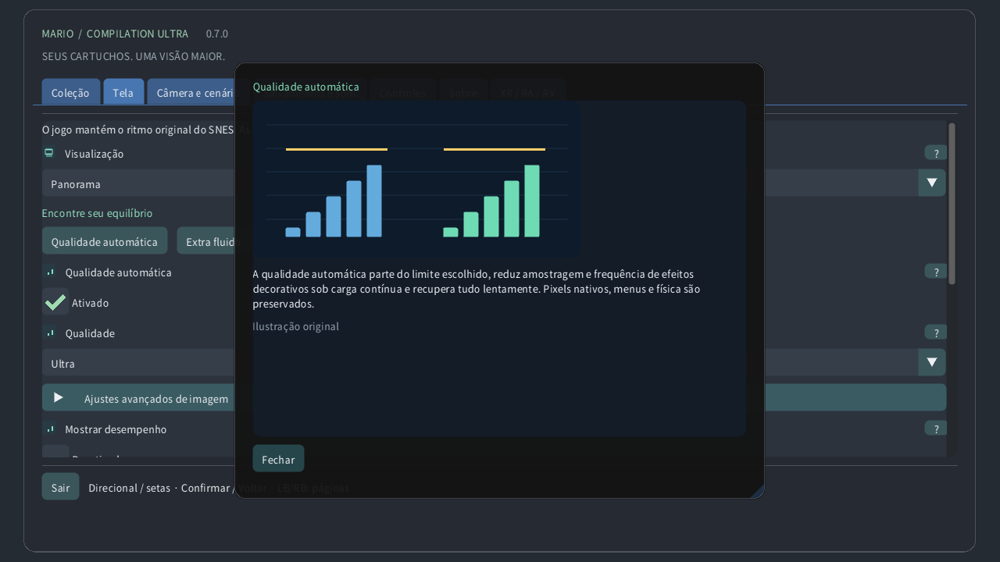

Escolha um cartucho local, inicie um jogo ou abra o guia. Os downloads públicos não incluem jogos nem seus dados salvos.
Original mantém a tela do console e Panorama a amplia. Atlas enquadra o terreno disponível; Mapa completo lê toda a área carregada quando o formato é compatível, inclusive sem exploração. Uma porta pode mudar de área.
Escolha se a vista segue a câmera original, o personagem ou uma posição fixa. Isso muda o enquadramento, sem mover o personagem nem ativar inimigos distantes.
O zoom muda quanto terreno cabe na tela. No relógio, 0% mostra toda a área carregada e 100% chega à câmera original. A velocidade do jogo não muda.
Em relógios redondos, a lente curva o retângulo inteiro do jogo para um círculo sem cortar suas bordas. Controles e textos ficam planos. Desative para um retângulo sem distorção.
A coroa ou aro giratório detectado ajusta o zoom no jogo e rola os menus. Sensibilidade muda o efeito de cada giro; Inverter troca o sentido. O zoom por toque funciona sem coroa.
Pixels próximos mantém bordas duras. Nítido preserva a clareza em tamanhos não inteiros. Suave ameniza a ampliação. Imagem original e colisões não mudam.
Pixels quadrados mantém o formato dos pixels originais; TV 4:3 reproduz as proporções de uma televisão. Mundo pixel usa pixels quadrados e zoom inteiro.
A qualidade automática parte do limite escolhido, reduz amostragem e frequência de efeitos decorativos sob carga contínua e recupera tudo lentamente. Pixels nativos, menus e física são preservados.
A reserva deixa tempo livre para tarefas inesperadas. Uma reserva maior favorece a fluidez. Extra fluido usa 40%; Quest mantém pelo menos 35%. A qualidade sobe quando há margem.
O estado térmico local do Android pode reduzir detalhes decorativos antes que o calor aumente. Não precisa de permissão extra nem rede. O sistema controla frequências reais e atualização.
A sincronização acompanha a tela para reduzir rasgos na imagem. O jogo mantém seu próprio ritmo. Quest usa a frequência escolhida do headset; a reserva é calculada para ela.
CRT eficiente mantém o visual retrô com menos cálculos. Automático começa leve e permite a referência após medir folga GPU contínua. Referência força o cálculo mais caro.
Escolha janela, monitor ou tela cheia. Essas opções mudam onde a imagem aparece, sem alterar a área carregada nem seus dados salvos.
O fundo preenche o espaço ao redor do jogo. Cenário suave usa suas cores; Meia-noite e Preto são mais discretos. Desfoque e brilho afetam esse entorno.
O desfoque suaviza o cenário ao redor e o brilho ajusta sua luz. A imagem nativa não muda. Sob carga, a qualidade automática pode atualizar essa decoração com menor frequência.
Bordas suaves misturam a cena ampliada ao fundo perto da câmera original. Desative para uma junção mais marcada. Mapas completos mantêm seu enquadramento.
O localizador marca o personagem, a guia contorna a câmera original e o minimapa mostra sua posição. O close mantém a tela nativa legível quando o mapa está distante.
As prévias mostram posições verificadas ou aparências observadas localmente. Objetos esmaecidos e contornos são guias, não inimigos ativos extras. Opacidade e rótulos ajustam sua visibilidade.
Escolha canto, tamanho, opacidade e duração dos lembretes. Tempo zero mantém a indicação visível. Essas sobreposições não mudam o jogo nem a câmera.
Ajuste idioma, tamanho e contraste dos menus para ler com conforto. Os guias ilustrados funcionam offline. Renderização e idioma do cartucho são independentes.
Escolha o mapeamento dos botões e as zonas mortas. Uma zona maior ignora mais movimentos pequenos. Controles rápidos acrescentam atalhos de câmera, mantendo as ações normais.
Os botões de toque aceitam vários dedos ao mesmo tempo. Automático os mostra sem gamepad conectado. Posição, tamanho, opacidade e lado mudam os controles, não a física.
Segure o comando escolhido para voltar por estados recentes exatos. A duração depende da memória e do cartucho. Áudio reverso e indicador são opcionais; os salvamentos em disco são separados.
Um espaço guarda o estado atual da máquina. Carregar volta a ele; a retomada automática usa outro espaço. O progresso da bateria é separado. Substituir exige confirmação.
Volume e silêncio controlam a reprodução local. Não mudam a velocidade nem apagam dados salvos. O áudio da volta no tempo é ajustado separadamente.
A pausa solta os comandos mantidos. Foco e rastreamento definem pausas automáticas. Retomar mantém a partida; sair grava o progresso da bateria.
Escolha tela flutuante, parede, atlas no chão, mesa arcade, sala CRT ou tela curva. A mesma partida continua; só a apresentação no espaço muda.
Tamanho, distância, altura, inclinação e espaço posicionam o objeto virtual na sala. Use as unidades mostradas. Recentralizar o traz ao alcance sem reiniciar o jogo.
A parede automática usa dados de cena autorizados, quando disponíveis. Travar ou salvar mantém o local escolhido. Perda de rastreamento pode pausar; a posição manual continua disponível.
Controle virtual, mãos e toque direto usam as mesmas ações do jogo. Tamanho e dicas melhoram o uso. A força háptica muda o retorno, não o instante dos botões.
CRT acrescenta linhas de varredura, máscara RGB, vidro curvo e reflexos. Mais intensidade é uma escolha visual, não novos detalhes do jogo. A qualidade automática pode simplificar decoração cara.
Passthrough mostra sua sala real; o ambiente virtual fornece o fundo quando ele está desligado. Transparência, cenário ao redor e brilho mudam o que cerca o jogo.
Detalhe da tela do jogo e dos olhos limita camadas diferentes. A qualidade automática ajusta ambas. O menu independente fica nítido; a foveação periférica é opcional quando suportada.
Use a interrogação para uma explicação ilustrada. O cursor ou foco do controle mostra uma prévia; o toque abre a ficha. As ilustrações são exemplos originais, não capturas de cartuchos.
A qualidade manual desativa a adaptação e mantém o detalhe escolhido. Qualidade automática restaura a adaptação; Extra fluido deixa mais reserva de desempenho.
Em Quest compatíveis, carga prolongada pode reduzir detalhes periféricos preservando o centro. Menus usam uma camada nítida separada. Sem suporte, o renderizador normal assume. A qualidade no headset físico ainda não foi testada.